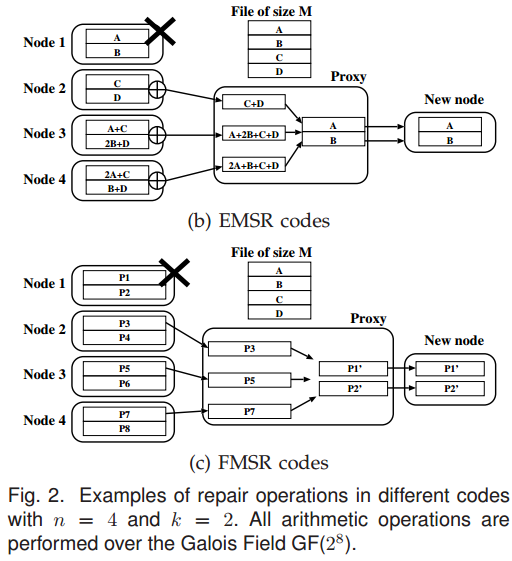

@FAST'12 @ Regenerating Code
NCCloud: A Network-Coding-Based Storage System in a Cloud-of CloudsSummaryStrength (Contributions of the paper)Weakness (Limitations of the paper)Future Work
Motivation of this paper: It is important to do the repair in multiple cloud storage. This paper's objective is to minimize the cost of storage repair (due to the maintain of data over the clouds) for a permanent sing-cloud failure.
Functional Minimum-Storage Regenerating Code (FMSR): This paper present a proxy-based, multiple-cloud storage system, called NCCloud, which can practically address the reliability of today's cloud backup storage. NCCloud implements FMSR, which eliminates the encoding requirement if storage nodes during repair, while ensuring the new set of stored chunks after each round of repair preserves the required fault tolerance.  Code chunk equals to linear combination of original data chunks. For the repair in FMSR, it downloads one code chunk from each surviving node and reconstructs new code chunks (via random linear combination) in new node. However, FMSR codes is not systematic, FMSR codes are acceptable for long-term archival applications, where the read frequency is typically low.
Iterative Repairs: FMSR codes regenerates different chunks in each repair, so it is necessary to ensure MDS property still holds even after iterative repairs. To achieve this, it also proposes a two-phase checking method.
- MDS property check: current repair maintains MDS property.
- Repair MDS property check: next repair for any possible failure maintains MDS property.
Implementation and Evaluation: It implements NCCloud as a proxy that bridges user applications and multiple clouds including three layers:
- file system layer
- coding layer (both RAID-6 and FMSR)
- storage layer
Evaluation: Response time: both in Local Cloud (OpenStack Swift) and Commercial Cloud (multiple containers in Azure) with different file sizes.